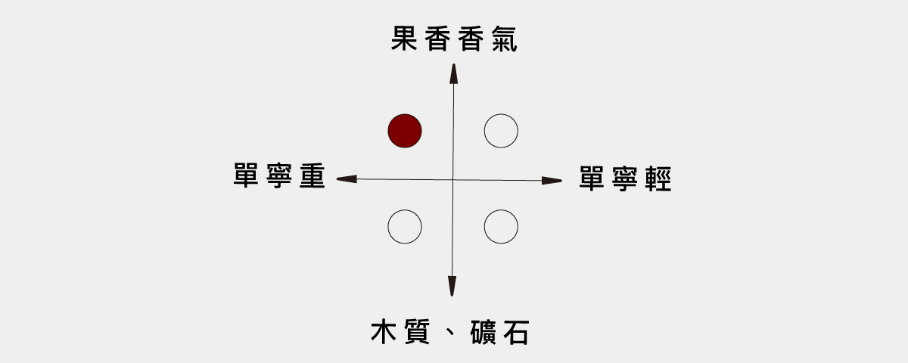

Decanter 世界葡萄酒獎 - 銀牌（Silver）
幾近破表的頂級佳釀
【風味】

【酒評介紹 - Wine Enthusiast】
Wine Enthusiast 創刊於 1988 年，是涉及範圍最廣的紅酒電子刊物，內容幾乎包羅了葡萄酒世界的所有方面，如葡萄酒、烈酒、美食、旅游以及娛樂等主題。WE 評分的酒款由編輯部挑選，評分團隊是由葡萄酒界最富學識的葡萄酒評論家組成。這些品酒師遍布世界各地，每個人負責特定的產區，一般由個人或一組人進行盲品評分，或者根據業界相關規定進行評分。
【酒評介紹 - Decanter】
英國的 Decanter 雜誌始創於 1975 年，專門介紹葡萄酒及烈酒，算是世界上發行國家最廣泛的雜誌之一，每年也會對葡萄酒評分，共有 3 名專業酒評參與，每天評分最多 85 款葡萄酒。三位酒評家每輪將單獨盲品 8-10 款葡萄酒。然後進行討論，如果發現某款酒分數相差太大，則會重新評分，最終評分取三人的平均分，不考慮價格。